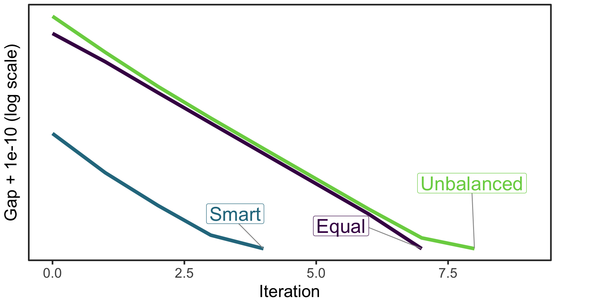
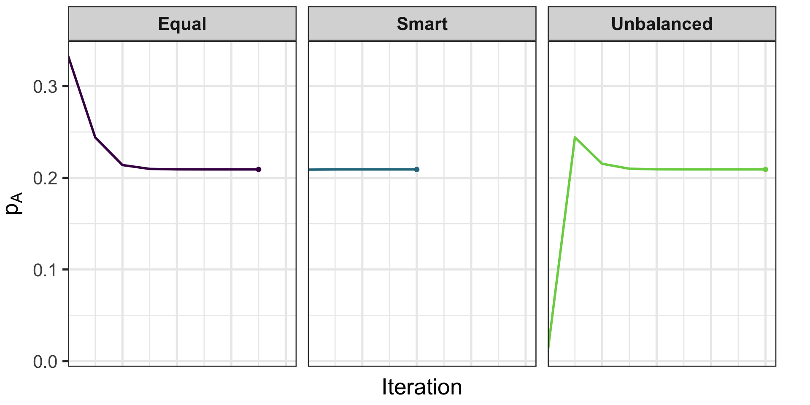
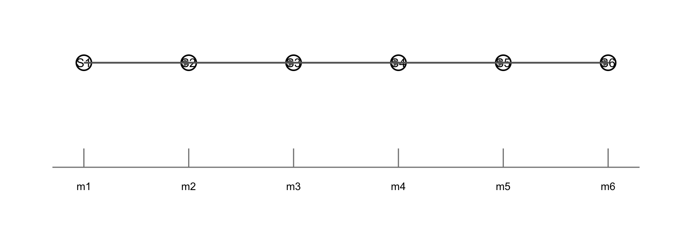

Iterate until parameter changes are below a tolerance.
EM for Gene Frequencies
Genotype
Phenotype
Observed Counts
Genotype Frequency
\(AA\)
\(A\)
\(725\)
\(p_A^2\)
\(AO\)
\(A\)
\(2 p_A p_O\)
\(AB\)
\(AB\)
\(72\)
\(2 p_A p_B\)
\(BB\)
\(B\)
\(258\)
\(p_B^2\)
\(BO\)
\(B\)
\(2 p_B p_O\)
\(OO\)
\(O\)
\(1073\)
\(p_O^2\)
EM: Starting Values Matter
Different initial \((p_A, p_B, p_O)\) can change speed (not the final MLE)
Strategies:
Equal: \((1/3, 1/3, 1/3)\)
Unbalanced guess: \((0.01, 0.98, 0.01)\)
Smart (use \(p_O^{(0)} = \sqrt{n_O/N}\), solve for \((p_A^{(0)}, p_B^{(0)})\) from \(2p_A p_B\))
Tolerance of \(1 \times 10^{-6}\)
EM: Starting Values Matter
Strategy
Iterations
\(\hat{p}_A\)
\(\hat{p}_B\)
\(\hat{p}_O\)
Equal
7
0.209131
0.080801
0.710068
Smart
4
0.209131
0.080801
0.710068
Unbalanced
8
0.209131
0.080801
0.710068
EM Convergence: Log-Likelihood Gap

EM Parameter Trajectories

When does EM fail?
Non-identifiability / flat likelihood: Ridges in segregation or linkage models; EM wanders or stalls.
Local maxima & starts: Multiple modes (e.g., mixture of penetrance classes); poor initialization traps EM.
Boundary degeneracy: Rare allele/component weight driven to 0; variance or frequency estimates collapse.
Model misspecification: Violated assumptions (e.g., Hardy-Weinberg, stratification) give misleading “convergence.”
Linkage vs Association Testing
Linkage: Tracks co-segregation of markers and traits within families to map disease genes.
Null hypothesis: no linkage (independent assortment), \(\theta = 0.5\).
Association: Tests for correlation between variants and traits in populations to pinpoint causal loci.
Null hypothesis: no association (e.g., \(\beta=0\) or OR=1).
Two-Point Linkage: Terms
Independent assortment (recall): when loci are unlinked, transmissions are independent and the chance a crossover separates them is \(\theta=0.5\) (Mendel’s Second Law).
Informative transmission/meiosis: a parent→child transmission where the transmitting parent is heterozygous at the loci of interest and the genotypes allow us to tell whether a crossover occurred.
Nonrecombinant transmission: the child receives an allele combination that matches one of the transmitting parent’s original allele pairs (no crossover between the loci).
Recombinant transmission: the child receives a new combination relative to the transmitting parent’s original pair (a crossover occurred between the loci).
Two-Point Linkage: Direct Counting
Count \(R\) recombinants and \(NR\) nonrecombinants; total informative \(I=R+NR\).
Point estimate: \(\hat{\theta}=R/I\).
LOD from counts (vs. independence at \(\theta=0.5\)): \[
\mathrm{LOD}(\theta) = \log_{10}\!\left\{ \frac{\theta^{R} (1-\theta)^{NR}}{0.5^{I}} \right\}
\]
Worked Example: Direct Counting LOD
Suppose \(I=40\) informative meioses with \(R=12\) recombinants. For \(\theta=0.1\), \[
\mathrm{LOD}(0.1) = \log_{10}\!\left\{ \frac{0.1^{12} \cdot 0.9^{28}}{0.5^{40}} \right\}.
\]
Maximize \(\mathrm{LOD}(\theta)\) over \(\theta\) to estimate the recombination fraction; thresholds like LOD \(\ge 3\) (strong evidence) and \(\le -2\) (against) guide interpretation.
Two-Point Linkage: EM with Unknown Phase
Setup: One heterozygous transmitting parent at two loci (\(A/a\) and \(B/b\)), crossed to an \(aabb\) mate; \(N\) children observed. The parent’s haplotype configuration (coupling \(AB/ab\) vs repulsion \(Ab/aB\)) is unknown.
Observations: child haplotype counts (which equal transmitted haplotypes from the heterozygous parent): \((n_{AB}, n_{Ab}, n_{aB}, n_{ab})\) with \(N=\sum n_{\cdot}\). Let \(n_{\text{NR}} = n_{AB}+n_{ab}\) and \(n_{\text{R}} = n_{Ab}+n_{aB}\).
Two-Point Linkage: EM with Unknown Phase
Model (given recombination fraction \(\theta\)):
If phase is coupling (\(Z=C\)): \(P(\text{NR})=1-\theta\), \(P(\text{R})=\theta\) (split equally across the two categories).
If phase is repulsion (\(Z=R\)): \(P(\text{NR})=\theta\), \(P(\text{R})=1-\theta\).
Same objective: estimate recombination while marginalizing over latent transmissions/phase under current \(\theta\).
E-step engine: compute required posteriors via Elston–Stewart peeling (pedigrees) or Lander–Green forward–backward (marker HMM) when you have multiple markers and missing genotypes.
Quantities needed: \(\mathbb E[\#\,\text{recombinants between adjacent markers}]\) and \(\mathbb E[\#\,\text{informative transmissions}]\) under current map.
Use in practice: either (a) plug these expectations into an EM-style update, or (b) more commonly, scan positions to build a LOD curve and report peak and 1-LOD interval.
What Is Multipoint?
Definition: jointly analyze many linked markers (not just a pair) to infer inheritance patterns across a chromosome region while estimating recombination parameters.
Why it helps: each marker contributes information; combining them increases the number of informative transmissions and sharpens localization (higher, narrower LOD peaks).
Model view: a sequence of inheritance states (who inherited which parental haplotypes) connected by transitions governed by recombination rates — naturally represented as an HMM.
Practical outputs: likelihood/LOD as a function of position, posterior IBD/phase probabilities, and expected recombinant counts between adjacent markers.
Algorithms: Elston–Stewart (peeling) is efficient for large, shallow pedigrees; Lander–Green (HMM) is efficient for many markers on small/moderate pedigrees.
Multipoint Linkage (HMM)

Multipoint Linkage (HMM)
Markers along a chromosome define an HMM over inheritance states; adjacent recombination rates drive transitions.
Combine penetrance with the marker HMM to compute \(L(\theta)\) efficiently as you slide along the map (forward–backward yields the needed posteriors even with missing phase/genotypes).
Pros: more information than two-point; better localization. Cons: requires a genetic map and error modeling.
Hardy–Weinberg equilibrium in controls (e.g., P > 1e−6), mindful of true deviations.
Minor allele frequency threshold (e.g., MAF ≥ 0.01 unless rare-variant methods used).
Differential missingness across case/control; strand/allele checks.
Basic QC Pipeline (Sample-level)
Sample call rate; sex checks from X chr; heterozygosity outliers.
Relatedness/duplicates via IBD; ancestry via PCA; remove outliers or adjust with PCs.
Duplicates/cryptic relatedness: retain one per pair or use mixed models.
Demo: Simulated Single-Marker Test
term
estimate
std.error
statistic
p.value
(Intercept)
-0.9053
0.0810
-11.1739
0
G
0.3797
0.0855
4.4390
0
C
0.7500
0.0641
11.7074
0
HWE and Allele Counts (Quick Checks)
For a bi-allelic SNP, with counts \((n_{AA}, n_{Aa}, n_{aa})\), test HWE via \(\chi^2\): \(\displaystyle X^2=\sum_{g\in\{AA,Aa,aa\}} \frac{(n_g - N \hat p_g)^2}{N\hat p_g}\) with \(\hat p_A=(2n_{AA}+n_{Aa})/(2N)\) and \(\hat p_g\) from HWE.
Prefer exact tests for small \(N\) or rare variants; compute in controls to avoid case-driven deviations.
Haplotype Association: Setup
Unphased genotypes induce ambiguity in haplotypes; EM estimates haplotype frequencies under HWE.
E-step: compute \(P(\text{haplotype pair}\mid \text{genotype}, p^{(t)})\) per person; M-step: update haplotype frequencies by expected counts.
Association: use haplotype dosages as covariates in regression; sliding windows or gene-based haplotypes; consider LD and multiple testing.
EM Demo: Two-SNP Haplotype Frequencies
Haplotype
True
EM_Estimate
ab
0.40
0.3981
aB
0.10
0.0959
Ab
0.25
0.2469
AB
0.25
0.2591
LD From Estimated Haplotypes
pB1
pB2
D
r2
Ab
0.506
0.355
0.0795
0.1103
Summary & Key Takeaways
Likelihood optimization: Newton–Raphson (score/Hessian), Gradient Descent/SGD (scalable), and EM (latent-data) are core tools.
EM for ABO gene frequencies: initialization affects speed; log-likelihood increases monotonically until convergence.
Linkage: two-point LOD and unknown phase via EM; multipoint mapping framed as an HMM for efficient inference with missing data.
LD basics: D, D′, and r connect haplotypes to correlation; explains tag–causal attenuation in association.
Association today: single-marker linear/logistic tests, haplotype tests via EM, and basic variant/sample QC.
Next: population structure (PCs), mixed models (LMM/GLMM), and GWAS-scale thresholds, power, and imputation in later lectures.